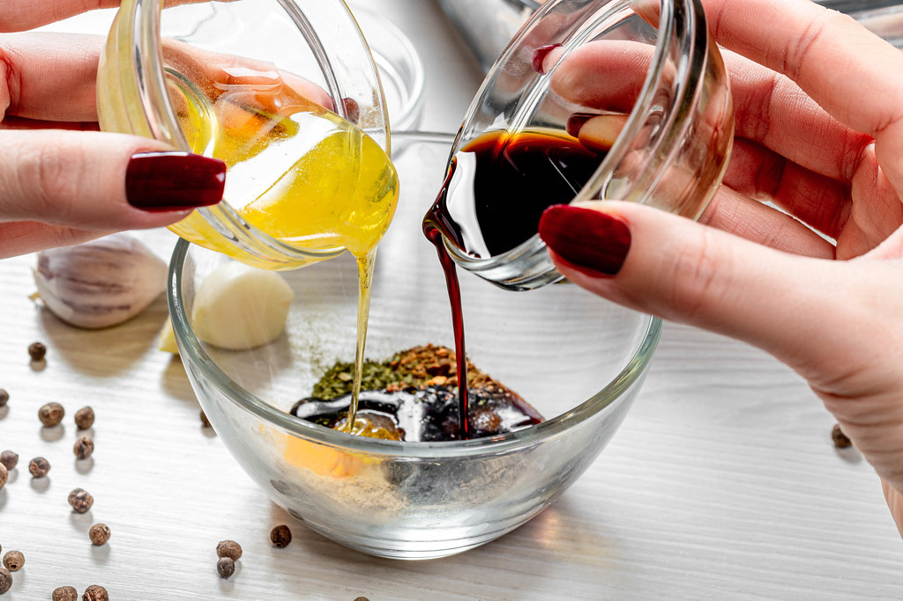

Honey Garlic Chicken Wings

Ingredients
There are many ingredients for the honey garlic sauce,but here is some ingredients!
- 1 tablespoon canola oil
- 3 cloves garlic, minced
- 3/4 cup ketchup
- 1/2 cup honey
- 1/4 cup soy sauce
You can change up this recipe as well!
How to make the sauce
- Combine the sauce ingredients into a saucepan
- Simmer unil thickened, to know this, the sauce should coat the back spoon
- use a foil lined pan and top it with parchment paper
- Allow the wings to bake
There are many other ways for
How to make the sauce.
How can I make the wings?
There are many ways to make the chicken wings so I will list some!
- In the oven
- Fry them
- Or airfry!
